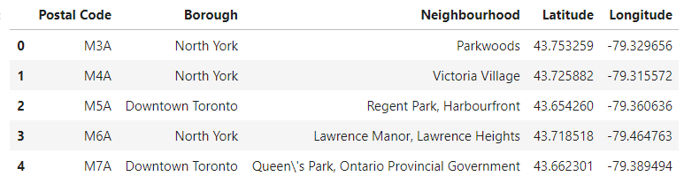
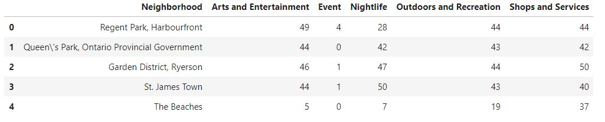
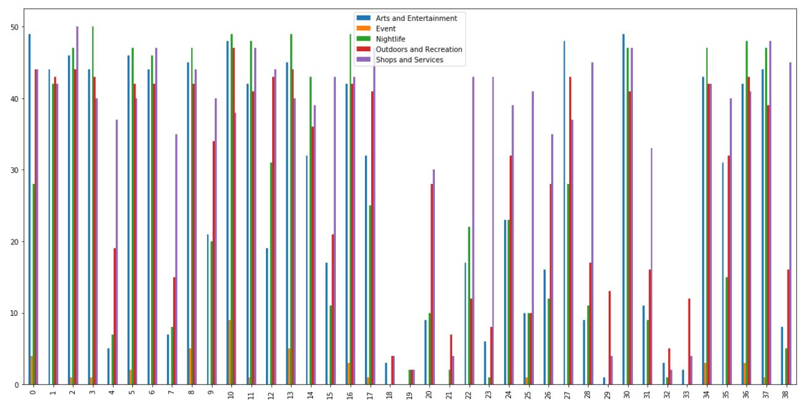
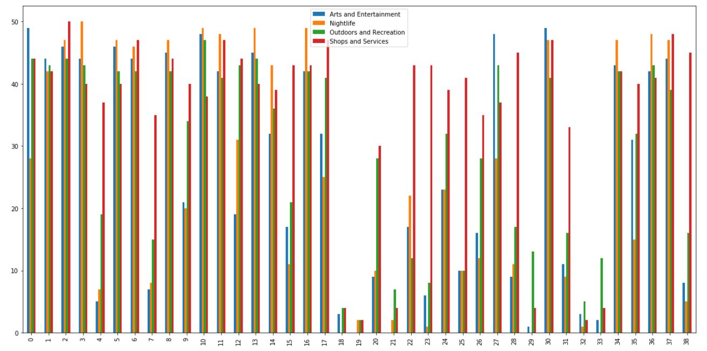
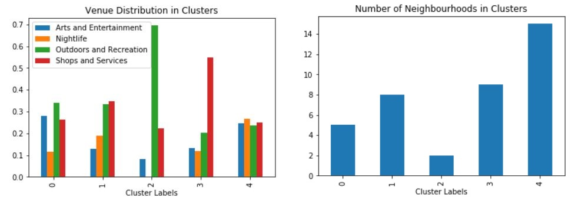
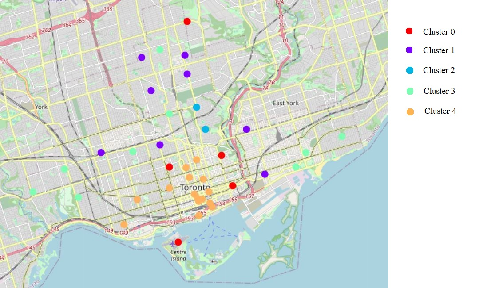

Toronto Recreation Clusters
Introduction
As the provincial capital of Ontario, Toronto is a prominent hub for its residents as well as the millions of tourists that visit per year. From nightlife to shopping to the arts, every corner of Toronto is packed with sites to visit and scenery to enjoy.
Toronto is a city full of exploration for tourists and opportunity for the entrepreneur. Due to the large amount of existing establishments, it may be difficult for an entrepreneur to decide on where to base their business. Where should they build a shopping center? A bar? What about a gym? On the other hand, a tourist only has a limited time to enjoy the city. Which districts should they visit based on their interests?
Data
To address this issue, I will mainly use the foursquare api. First, I will determine the districts of Toronto by scraping Wikipedia. From these determined districts, I will use their longitude and latitude to search for venues within a 500m radius. Using the category of the found venues, I plan to cluster the districts of Toronto and visualize them in an interactive map.
Libraries
This project required the use of a few libraries.
-
Folium
Folium is a library used to generate interactive maps. This will be used to visualize the neighbourhood locations in Toronto as well as the final clusters.
-
Beautiful Soup
Beautiful soup is a library used to scrape websites. This will be used to scrape wikipedia for the postal codes of the Toronto neighbourhoods.
-
NumPy
NumPy is a libary used to handle data in a vectorized manner.
-
Pandas
Pandas is a library used for data analysis. This will be used to create dataframes for the data.
-
Matplotlib
Matplotlib is a library used for creating static, animated, and interactive visualizations.
-
Sklearn
Sklearn is a library used for machine learning. This will be used to cluster the neighbourhoods.
Methodology
Scraping Wikipedia
Using the BeautifulSoup library, the wikipedia page for Canadian postal codes starting with M was scraped for information on postal codes, boroughs, and neighbourhoods. This information was used in conjunction with a list of longitudes and latitudes of said codes to create a dataframe of the neighbourhoods and their coordinates. The head of this dataframe is pictured below.

Finding Venues
After isolating the boroughs in Toronto, the Foursquare api was used to find the types of venues present in each neighbourhood. The function getNearbyVenues_Overall was created to find the number of each type of venue present in each neighbourhood.
This function was used for each neighbourhood and results in the following dataframe.

This dataframe was visualized with a bar graph.

It is apparent that event venues are considerably more rare and not present in the majority of neighbourhoods. Therefore, due to their low number, the event venue category will be removed from the analysis. The resulting dataset is visualized in the bar graph below.

Clustering
Using the KMeans function from the SkLearn library, the Toronto neighbourhoods were clustered with a k of 2 to 30. For each of these sets of clusters, the inertia and silhouette score was calculated and graphed. This allowed the use of the elbow method to determine the optimal number of clusters: 5.

Results
Clustering the neighbourhoods into 5 clusters yeilded the following cluster distribution. The venue categories used were: Arts and Entertainment, Nighlife, Outdoors and Recreations, and Shops and Services.

These clusters were then plotted using folium onto a map of Toronto.

Upon inspection, Clusters 0 and 1 are quite similar, with only a difference in the percentage of Arts and Entertainment. Looking at the map generated, this distinction does make sense as neighbourhoods in cluster 0 are located closer to downtown Toronto. As a tourist, these areas may be of note if nightlife is not a priority.
Cluster 2 is noticably prominent, boasting a large percentage of venues categorized as Outdoors and Recreation. However, as a tourist, these neighbourhoods (Rosedale and Summerpark East) are residential neighbourhoods and therefore may not be very interesting to visit. As an entrepreneur, this area should be approached with caution
Cluster 3 has the highest percentage of venues classified as a shop or service. These areas may be of note to entrepreneurs due to their distance from downtown Toronto which can lead to lower property prices.
Finally, Cluster 4 is the most well rounded of clusters. It has an equal distribution of all 4 venue types. The neighbourhoods in this cluster are grouped in downtown Toronto. This cluster is recommended if tourists wish to spend an entire day exploring, as well as enjoy the nightlife offered. For entrepreneurs, though this area does see higher traffic than the other clusters, property prices here are also higher.
Conclusion
Further analysis would provide much more clarity for each cluster. The addition of property prices for each cluster would be beneficial to both entrepreneurs as well as people moving into the city. In each category of venue, there are additional types of venues. Therefore, for further clarity, each cluster can be grouped into subclusters based on venue type. Traffic to each cluster would also be useful for entrepreneurs looking to open a business. This traffic would include the amount of people visiting, mean income, and if possible, the percentage of money spent in each category of venue.
Overall, this analysis yeilded a promising foothold for further research. The most balanced neighbourhoods were in cluster 4, located in downtown Toronto. Moving further away from downtown, the other clusters generally had much fewer nighlife and arts and entertainment venues, but more outdoors, recreation, and shopping venues. The exception to this is cluster 0 which had fewer nighlife venues, but maintained the amount of arts and entertainment venues.